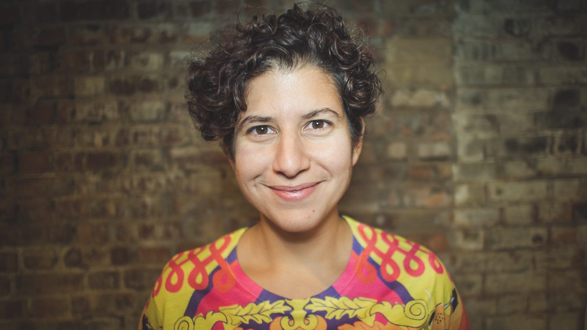

Using data for change across the social sector

About
Giselle is a senior leader with 15+ years' experience in social change, focusing on communicating data. Whether as an expert on BBC and Sky news, hosting a 500-person data festival, briefing ministers or advising charities on how to use data better, Giselle believes responsible data use helped us make better decisions, and should be available to all.
She has a degree in Maths and Physics and a Masters in Computational and Data Journalism. She is also an award-winning creative writer.
Writing and media
Highlights
Giselle's career has spanned large and small charities, the civil service, infrastructure organisations, grant makers and think tanks. Most recently, she was CEO of DataKind UK, a volunteer-powered data science charity and consulted on strategy and multi-year planning for Joseph Rowntree Foundation's Insight Infrastructure programme.
Her highlights include:
- Acknowledged by Number 10 as the key contributor to a change in Government policy, increasing access to early years education
- Became a sector leader in responsible data use transforming how charities use data science
- Designed and hosted a 500-person 3-day event showcasing responsible data use
- Consulted for government institutions, grantmakers and infrastructure organisations to build products, programmes and strategies
- As a volunteer, supported Global Witness to fight corruption, helped activists in Jordan through Data4Change and mentored young people in her community
- Trustee of London Plus, supporting London's voluntary and community sector; previously a trustee for Research Data Scotland, and an advisor to the Women's Budget Group and ONS
Organisations
Here are some of the organisations that Giselle has worked with.
Contact
Giselle took a career break to become an award-winning writer, alongside maintaining senior-level advisory work in the sector. She is now looking to return to the sector full time, and is eager to support an ambitious team in a thoughtful organisation.